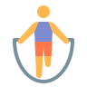
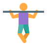
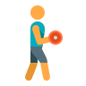
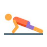

Atividades Na Academia
-

Pular corda
O equipamento mais básico na academia oferece um treino de corpo inteiro com uma tonelada de potencial para queimar gordura.
-
Agachamento
Burpees são o queimador de gordura clássico para treinadores e quase um rito de passagem para quase todos que querem suar.
-

Barra
A barra fixa fica na altura no quadril, trabalha a região de braços, peito e costas.
-

Halteres
Halteres são o queimador de gordura clássico para treinadores e quase um rito de passagem para quase todos que querem suar.
-
Bicicleta
serve para dar mais força às pernas e prevenir contra doenças cardiovasculares.
-

Flexão
Trabalha peito, tríceps, ombros, lombar e core e só necessita de um espaço no chão para ser realizada.